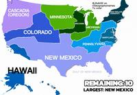
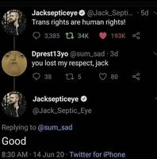
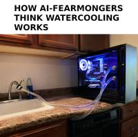
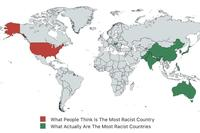

Bloomberg reports that Apple's two-year-old partnership with OpenAI "has become strained, according to people familiar with the matter."
Bloomberg describes OpenAI as "failing to see the expected benefits from the deal and now preparing possible legal action."
OpenAI lawyers are actively working with an outside legal firm on a range of options that could be formally executed in the near future, said the people, who asked not to be identified because the deliberations are private. That could include sending the iPhone maker a notice alleging breach of contract without necessarily filing a full lawsuit at the outset, according to the people... OpenAI believed that the companies' partnership, which wove ChatGPT into Apple software, would coax more users into subscribing to the chatbot. It also expected deeper integration across more Apple apps and prime placement within the Siri assistant. Instead, Apple's use of OpenAI technology across its operating systems remains limited, and features can be hard to find...
Apple has had its own concerns about OpenAI, including whether the company does enough to protect user privacy. And a recent push [by OpenAI] to make devices — an effort overseen by former Apple executives — has rankled the iPhone maker.
Any legal move by OpenAI likely wouldn't come until after the conclusion of the Musk trial, according to the people. No final decisions have been made, and OpenAI still hopes to resolve its issues with Apple outside of court.
The article points out that OpenAI "initially believed the deal could generate billions of dollars per year in subscriptions — something that hasn't come close to happening." An OpenAI executive argues to Bloomberg that from a product perspective Apple hasn't done everything they could, "and worse, they haven't even made an honest effort."
Read more of this story at Slashdot.
"Most of the plastic waste in California is about to lose the recycling symbol," writes the Washington Post's "climate coach."
The "chasing arrows" symbol, created in 1970 by a college student inspired by the burgeoning environmental movement, has been stamped indiscriminately on plastic bottles, clamshell takeout containers, chip bags and more for decades. The majority of the items emblazoned with the mark have been virtually impossible to recycle for most people. California lawmakers say they want to end the charade: Under what's known as the Truth in Recycling law, plastics cannot use the symbol if they aren't collected by curbside programs serving 60% of Californians and sorted by facilities serving 60% of the state's recycling programs (with some additional requirements). If the law goes into effect as scheduled on October 4, more than half of the types of plastic packaging and products sold in the state can no longer carry the chasing arrows logo. That will affect plastic films, foam, PVC and mixed plastics...
Food and packaging groups have sued the state of California, calling the law a form of censorship whose vague restrictions violate the First Amendment and due process rights.... Advocates of the law counter that corporations deliberately misled the public by turning the recycling symbol into a marketing device that masks the fact that only a small fraction of plastic packaging is ultimately recycled... The mark was originally intended to informwaste processors what polymers a plastic item was made from. But the public reasonably assumed anything stamped with the symbol was recyclable. Millions of tons of worthless plastic trash have since poured into recycling facilities unable to process it....
States are now taking action. Seven have passed laws shifting the cost of recycling onto packaging makers. Oregon and Washington have lifted requirements that plastic containers carry the chasing arrows symbol.
The article notes that
Norway already recovers 97% of beverage bottles, while Slovakia recycles 60% of plastic packaging. "But the U.S. only recovers about a third of its PET and HDPE bottles, and just 13% of plastic packaging, according to U.S. Plastics Pact, an industry-led forum.
"It won't be easy for the U.S. to reach higher levels of recycling: The necessary infrastructure and incentives are chronically underfunded, no federal mandate exists for minimum-recycled-content that would create demand and a mix of mostly unrecyclable hydrocarbons still dominates the waste stream."
Read more of this story at Slashdot.
"The vulnerability is simple in practice," writes Tom's Hardware: "run a command as a standard user and gain root (administrator) access to the machine."
And it was Mythos Preview that helped the security researchers at Palo Alto-based Calif bypass a five-year Apple security effort in just five days. The blog 9to5Mac reports:
Last year, Apple introduced Memory Integrity Enforcement (MIE), a hardware-assisted memory safety system designed to make memory corruption exploits much harder to execute... [The researchers note it's built into Apple all models of the iPhone 17 and iPhone Air, and some MacBooks] They explain they have a 55-page technical report on the hack, but they won't release it until Apple ships a fix for the exploit. But they do note in broad terms that Anthropic's Mythos Preview model helped them identify the bugs and assisted them throughout the entire collaborative exploit development process.
"Mythos Preview is powerful: once it has learned how to attack a class of problems, it generalizes to nearly any problem in that class. Mythos discovered the bugs quickly because they belong to known bug classes. But MIE is a new best-in-class mitigation, so autonomously bypassing it can be tricky. This is where human expertise comes in. Part of our motivation was to test what's possible when the best models are paired with experts. Landing a kernel memory corruption exploit against the best protections in a week is noteworthy, and says something strong about this pairing...."
[I]n a time when even small teams, with the help of AI, can make discoveries such as this one, "we're about to learn how the best mitigation technology on Earth holds up during the first AI bugmageddon."
Read more of this story at Slashdot.
Variety reports:
Amazon MGM Studios started auditioning actors for the part of 007 in the past few weeks, Variety has learned... The next James Bond film will be directed by Denis Villeneuve, the filmmaker behind the "Dune" franchise, "Arrival" and "Sicario." Amy Pascal of the "Spider-Man" films and David Heyman of the "Harry Potter" series will produce the picture, which will feature a script from "Peaky Blinders" creator Steven Knight. Tanya Lapointe ("Dune") is executive producing the film.
The BBC notes it's been five full years since the release of the last Bond film No Time To Die, and 15 months "since Amazon MGM Studios took control of the Bond franchise." But they also offer this list of "the current bookmakers' favourites" for who will become the seventh actor to play the gadget-loving super spy in the franchise's 64-year history:
Callum Turner — the 36-year-old actor is the current bookies' frontrunner. He has been in the Fantastic Beasts franchise, was nominated for a Bafta for TV drama The Capture, and starred in Apple TV's Masters of the Air...
Jacob Elordi — the Australian actor, 28, made his name in TV's Euphoria and cult hit film Saltburn, and was nominated for an Oscar this year for playing the monster in Frankenstein. The Rest Is Entertainment host Marina Hyde recently said she'd heard from a number of well-placed sources that he's now "in pole position" to be Bond.
Harris Dickinson — the 29-year-old is playing John Lennon in the forthcoming major Beatles biopics, and has previously appeared in Maleficent, The King's Man, Where the Crawdads Sing and Babygirl, and received a Bafta TV Award nomination for A Murder at the End of the World.
Henry Cavill — the Superman, The Witcher and Mission: Impossible actor is a fan favourite and was widely regarded to have been the runner-up when Craig landed the part. But at 43, is he now too old to start a lengthy stint as 007?
Aaron Taylor-Johnson — the Bafta-nominated 35-year-old, known for films like Kick-Ass, Kraven the Hunter and 28 Years Later, is a perennial contender, and would fit the bill.
Theo James — the suitably suave star, 41, made his name in the Divergent films and has since built his reputation in The Time Traveler's Wife, The White Lotus and The Gentlemen.
...Or producers could well go for one of the many other names who have been touted for the role, or an unexpected choice.
Read more of this story at Slashdot.
The blog It's FOSS has an update on the Fedora AI Developer Desktop Initiative, a proposed platform for AI/machine learning workloads on Fedora. It's now been blocked "after two Fedora Council members retracted their earlier approval votes."
The initiative was proposed by Red Hat engineer Gordon Messmer, aiming to deliver an Atomic Desktop with accelerated AI workload support, covering developer tools, hardware enablement, and building a community around AI on Fedora... At the May 6 council meeting, the members unanimously voted to approve this new initiative. After which a short, lazy consensus window was left open until May 8 to accommodate absent members, after which the decision was to be ratified.
But that last bit never happened, as council member Justin Wheeler (Jflory7) was the first person to change their vote to -1... ["While I strongly support leveraging AI to establish Fedora as a leading platform, completely rearchitecting our kernel strategy is a massive structural shift. It requires explicit alignment with our legal and engineering stakeholders before we commit the project to this path."]
Following that, fellow council member Miro HronÄok (churchyard) put in his -1, saying that he had originally assumed the proposal was purely additive and therefore uncontroversial. But seeing the community's response, he realized that he was mistaken about that. As an elected representative, he felt the need to reflect on this major proposal before signing it off.
Over 180 replies have piled up in the proposal's discussion thread, with many well-known Fedora contributors pushing back on things like kernel policy, proprietary software, and project identity. Hans de Goede from the packaging team called out the proposal's emphasis on CUDA support as going against Fedora's foundational commitment to free software, arguing that open alternatives like AMD's ROCm and Intel's oneAPI should be the focus instead.
Read more of this story at Slashdot.
Japan's worsening bear problem has created a shortage of handmade "Monster Wolf" robots, which are $4,000 solar-powered scarecrow-like devices with glowing eyes, sensors, and blaring sounds designed to frighten the animals away. "We make them by hand. We cannot make them fast enough now. We are asking our customers to wait two to three months," company president Yuji Ohta recently told the AFP. Popular Science reports: First released in 2016 by the manufacturer Ohta, Monster Wolf was originally designed to ward off the agricultural foes like boars, deer, and the island nation's Asian black bear (Ursus thibetanus) and brown bear (Ursus arctos) populations. The creative solution quickly went viral for its red LED eyes and menacing fangs -- as well as its admittedly odd, furry pipe frame.
Starting at around $4,000, each bespoke Monster Wolf is now equipped with battery power, solar panels, and detection sensors. Its speakers are programmed with over 50 audio clips including human voices and sirens audible over half a mile away. These aren't assembly line products, however. Each Monster Wolf is custom made, and Ohta simply can't keep up with the current demand.
[...] Ohta told the AFP that amid the ongoing crisis, there has been "growing recognition" that Monster Wolf is "effective in dealing with bears." The main customer base remains farmers, but orders are also coming from golf courses and rural workers. Upgraded versions will soon include wheels to actually chase animals and patrol preset routes. There are also plans to release a handheld version for outdoor enthusiasts and schoolchildren. Until Ohta catches up with its orders, residents and visitors are encouraged to review the Japanese government's own bear safety tips.
Read more of this story at Slashdot.
An anonymous reader quotes a report from The Guardian: Wood heating is reintroducing lead into the air of local communities and homes, a systematic investigation by academics has found. Overwhelming evidence of lead's neurotoxicity meant the metal was banned as an additive in petrol more than 25 years ago. The research by academics from the University of Massachusetts Amherst began by analysing samples of particle pollution from five suburban and rural towns in the north-east US. They looked for tiny particles of potassium that are given off when wood is burned and also particles containing lead. Samples from seven winters revealed associations between potassium and lead. When there were more wood burning particles in a daily sample, there was more lead in the air, with clear straight-line relationships in four of the five towns.
The project was extended to 22 other towns across the US. The relationships between lead and potassium varied from place to place, being strongest in the Rocky Mountains. By factoring in the effects of temperature, moderate to strong associations in their analysis strengthened the conclusion that the extra lead came from wood burning. The lead concentrations were less than the US legal limits, but any exposure to the metal is harmful. [...] Although less than legal limits, lead particles are routinely measured in UK cities in winter when people are also burning wood. This is normally attributed to waste wood covered with old lead paint, but the Umass Amherst study suggests the metal is coming from the wood itself. This means that any wood burning could increase exposure in neighborhoods and at home. Tricia Henegan, a PhD student at Umass Amherst and the first author on the research, said: "The most logical answer [to the question of how lead ends up in wood] is that it comes from uptake in the soil, probably riding along with the nutrients and water that trees need. Once in the tree, it deposits in the tree's tissues and remains until that tree is burned." Other research has found that it can then become part of the smoke.
"The use of wood as an energy source is a relic of the past, one that should not be relived if given a choice. Although wood fuel use can feel nostalgic, it does have negative consequences on air quality, and therefore public health."
Read more of this story at Slashdot.
An anonymous reader quotes a report from Ars Technica: A bill focused on maintaining long-term playable access to online games has passed out of the California Assembly's appropriations committee, setting up a floor vote by the full legislative body. The advancement is a major win for Stop Killing Games' grassroots game preservation movement and comes over the objections of industry lobbyists at the Entertainment Software Association. California's Protect Our Games Act, as currently written, would require digital game publishers who cut off support for an online game to either provide a full refund to players or offer an updated version of the game "that enables its continued use independent of services controlled by the operator." The act would also require publishers to notify players 60 days before the cessation of "services necessary for the ordinary use of the digital game." As currently amended, the act would not apply to completely free games and games offered "solely for the duration of [a] subscription. Any other game offered for sale in California on or after January 1, 2027, would be subject to the law if it passes. [...]
In a formal statement of support for the bill sent to the California legislature, SKG wrote that "there is no other medium in which a product can be marketed and sold to a consumer and then ripped away without notice As live service games rise in popularity for game developers and gamers alike, end-of-life procedures are essential tools to ensure prolonged access to the games consumers pay to enjoy." The Entertainment Software Association, which helps represent the interests of major game publishers, publicly told the California Assembly last month that the bill misrepresents how modern game distribution actually works. "Consumers receive a license to access and use a game, not an unrestricted ownership interest in the underlying work," the ESA wrote. The eventual shutdown of outdated or obsolete games is "a natural feature of modern software," the group added, especially when that software requires online infrastructure maintenance. The ESA also said the bill would impose unreasonable expectations on publishers regarding licensing rights for music or IP rights, which are often negotiated on a time-limited basis. "A legal requirement to keep games playable indefinitely could place publishers in an impossible position -- forcing them to renegotiate licenses indefinitely or alter games in ways that may not be legally or technically feasible," they wrote.
Read more of this story at Slashdot.
USA Today reports:
Trump Mobile phones are being shipped this week, the company exclusively confirmed to USA TODAY in an email May 11....
The company's first smartphone — the T1 Phone — was originally scheduled for release in August. However, the golden gadget's release was later delayed to October before being pushed back again to this week. Now, Trump Mobile CEO Pat O'Brien told USA TODAY, pre-ordered phones will start getting sent out to customers this week... O'Brien said the company anticipates all pre-ordered phones to be delivered within the next several weeks... The company's 5G "47 Plan" is available for $47.45 a month, a nod to President Donald Trump's two presidential terms, according to the website... Customers will also have Trump(SM) displayed as the status bar in their network.
The Verge reported the phone was added last week to Google's public list of devices certified for Google Play, "usually one of the final steps before an Android phone is launched."
Trump Mobile may have broken radio silence partly in response to a recent wave of media coverage alleging that buyers had received emails notifying them that their preorders had been canceled, coverage that even made it onto Stephen Colbert's The Late Show... [T]here's seemingly no evidence of the alleged cancellation emails beyond unverified social media claims.
In January The Verge also questioned reports that 600,000 people preordered the Trump phone with a $100 deposit. "I can't find a shred of evidence that this figure is true," calling it "a microcosm of how the modern media landscape and AI chatbots can combine to give falsities the sheen of respectability."
I first saw the figure in, of all places, the Threads feed of California governor Gavin Newsom's press office, which had shared a screenshot of a tweet of a Grok summary making the claim. Trustworthy, right? The Grok post cites "reports from sources like Fortune, NPR, and The Guardian" for the 600,000 preorders, but a quick search of their recent output shows no sign of the number... India's Economic Times and Hindustan Times both reported a more specific figure of 590,000 preorders, referencing an unspecified Associated Press report as the source. [The Associated Press] VP of corporate communications, Lauren Easton, confirmed to me that "AP's original stories never contained such a number...."
Hindustan Times writer Shamik Banerjee called the citation "a typo," and told me that the figure was in fact taken from The Times of India. The Times of India story, which is bylined only to the newspaper's lifestyle desk, is more transparent in its sourcing: a viral post by a meme account... It's been covered by multiple publications, now presented as fact on MSN.com and tech site Phone Arena. And that coverage has helped it to filter into the chatbots and not just Grok — Gemini and ChatGPT were both happy to confirm to me that 600,000 T1 Phones have been ordered so far, the former falsely attributing the number to the Associated Press, and the latter to Phone Arena.
As for how many Trump Phone preorders have actually been placed? No one outside the company knows.
Read more of this story at Slashdot.
What's going on with the U.S. job market? "The economy is growing. Unemployment is low," notes the Washington Post. "And yet, for millions of workers, finding a job has become harder than at almost any other point in decades," with the hiring rate "well below pre-pandemic levels for more than a year."
Part of the problem? "Of the net 369,000 positions added across the entire economy since the start of 2025, health care alone accounted for nearly 800,000 — meaning every other sector, taken together, shed jobs." By the end of 2025 nearly half of college graduates ages 22 to 27 were working at jobs that didn't require a degree, according to stats from New York's Federal Reserve Bank.
The headline unemployment rate, at 4.2%, looks healthy. But that figure has been buoyed by a shrinking labor force: Fewer people are actively looking for work, which keeps the rate down even as hiring slows...
[Some large tech companies] are trying to recalibrate after their hiring sprees of 2021 and 2022, when many had raised pay, offered flexible schedules and signed people quickly... Higher interest rates have also made expansion more expensive, pushing many firms to invest in technology rather than headcount. Another reason hiring has slowed is uncertainty about AI. Even though the technology has not yet replaced large numbers of workers, it is already shaping how companies think about hiring. "I don't think this is AI displacement," said Ben Zweig, chief executive of Revelio Labs, a workforce data company. "What we're seeing is anticipatory." Instead of rushing to bring on new workers, some firms are waiting to see how the technology evolves and which tasks it will eventually take over.
A 39-year-old web developer tells the Post it took 453 job applications to get a handful of interviews and two offers. And a journalism school graduate said they'd sent hundreds of job applications but most led nowhere, and they're now couch-surfing to save money.
But the problem seems even worse for young people. One 18-year-old told the Post that in a year and a half of job searching, they'd yet to even meet an employer in person.
The unemployment rate for people ages 22 to 27 who recently completed college hit 5.6% in the final months of 2025 — well above the 4.2% rate for all workers, according to national data from the Federal Reserve Bank of New York... At one point last summer, new workforce entrants made up a larger share of the unemployed than at any point since the late 1980s — higher even than during the Great Recession. When hiring slows, the door closes first on those without an existing foothold. For the class of 2026, the timing could hardly be worse.
"It is getting increasingly clear that young people are being more affected by AI than older workers," Zweig said. Companies are not eliminating jobs at scale, but many are slow to hire junior workers. At the same time, older workers are staying in the labor force longer, leaving fewer openings for new arrivals. Even when jobs are available, the bar has shifted. Positions once considered entry level now often require several years of experience, technical expertise and familiarity with AI tools. With fewer openings and more applicants, companies are holding out for candidates who can do the job immediately and need little training... Employers are also looking for a different mix of skills. An analysis of millions of job postings by Indeed found that communication skills now appear in nearly 42% of all listings, while leadership skills feature in nearly a third — capabilities that are harder to prove on a résumé and harder still to demonstrate without an existing professional network. Christine Beck, a career coach who works with early-career job seekers, said employers are asking more of the people they do hire.
Read more of this story at Slashdot.
The Linux 7.1 kernel has added new documentation clarifying what qualifies as a security bug and how AI-assisted vulnerability reports should be handled. Phoronix reports: Stemming from the recent influx of security bugs to the Linux kernel as well as an uptick in bug and security reports from discoveries made in full or in part with AI, additional documentation was warranted. Longtime Linux developer Willy Tarreau took to authoring the additional documentation around kernel bugs. To summarize (since the documentation is a bit too lengthy for a Slashdot story), the AI-assisted vulnerability reports should "be treated as public" because such findings "systematically surface simultaneously across multiple researchers, often on the same day." It adds that reporters should avoid posting a reproducer openly, instead "just mention that one is available" and provide it privately if maintainers request it. The guidance also tells AI-assisted reporters to keep submissions concise and plain-text, focus on verifiable impact rather than speculative consequences, include a thoroughly tested reproducer, and, where possible, propose and test a fix.
As for what qualifies as a security bug, the documentation says the private security list is for "urgent bugs that grant an attacker a capability they are not supposed to have on a correctly configured production system" and are easy to exploit, creating an imminent threat to many users. Reporters are told to consider whether the issue "actually crosses a trust boundary," since many bugs submitted privately are really ordinary defects that belong in the normal public reporting process.
All the new documentation can be read via this commit.
Read more of this story at Slashdot.
BrianFagioli writes: Kioxia and Dell Technologies say they have built a 2U server configuration capable of scaling to 9.8PB of flash storage, which is the sort of density that would have sounded impossible just a few years ago. The setup combines a Dell PowerEdge R7725xd Server with 40 Kioxia LC9 Series 245.76TB NVMe SSDs and AMD EPYC processors. According to Kioxia, matching the same capacity with more common 30.72TB SSDs would require seven additional servers and another 280 drives.
The companies are pitching the hardware squarely at AI and hyperscale workloads, where storage is rapidly becoming a bottleneck alongside compute. Kioxia claims the denser configuration can dramatically reduce power consumption and rack space requirements while remaining air cooled. The announcement also highlights how quickly enterprise storage capacities are escalating as organizations race to support larger AI models, massive datasets, and increasingly demanding data pipelines.
Read more of this story at Slashdot.
Bitwarden appears to be undergoing a quiet shift in leadership and messaging. Its longtime CEO and CFO have stepped down, while the company has removed "Always free" from a prominent password-manager page and replaced "Inclusion" and "Transparency" in its GRIT values with "Innovation" and "Trust." Fast Company reports: In February, longtime CEO Michael Crandell moved to an advisory role, according to LinkedIn, with no announcement from the company. His replacement, Michael Sullivan, former CEO of both Acquia and Insightsoftware, touts his experience with "all facets of mergers and acquisitions" on his own LinkedIn page, including experience working with leading private equity firms. CFO Stephen Morrison also left Bitwarden in April, replaced by former InVision CEO Michael Shenkman. Both Crandell and Morrison joined the company in 2019. Kyle Spearrin, who started Bitwarden as a fun hobby project in 2015, remains the company's CTO.
Meanwhile, Bitwarden has made some subtle tweaks to its website. The page for its personal password manager no longer includes the phrase "Always free." Previously this appeared under the "Pick a plan" section partway down the page, but that section no longer mentions the free plan, though it remains available elsewhere on the page. Bitwarden made this change in mid-April, according to the Internet Archive. Bitwarden has also stopped listing "Inclusion" and "Transparency" as tentpole values on its careers page. The company has long defined its values with the acronym "GRIT," which used to stand for "Gratitude, Responsibility, Inclusion, and Transparency." After May 4, it changed the acronym to stand for "Gratitude, Responsibility, Innovation, and Trust." The phrase "inclusive environment" still appears under a description of Gratitude, while "transparency" is mentioned under the Trust heading. They're just no longer the focus.
Read more of this story at Slashdot.
Google has confirmed it is testing a 5GB storage limit for some new Gmail accounts, with users able to unlock the standard 15GB by adding a phone number. Android Authority reports: While the company didn't mention which regions are impacted, user reports from yesterday were mostly from African countries. That said, if Google's tests prove successful, this could possibly become the norm for new sign-ups in more regions. The company could be testing ways to discourage users from creating multiple Gmail accounts to access free cloud storage. However, if you already have a Gmail account with 15GB free storage, it shouldn't be impacted by this change.
The language on Google's support page mentions "up to 15GB of storage." However, it's a recent change. An archived version of the support page from February did not use the words "up to." Whether the test has been running since early March or Google updated its language before it ever started the test, it's evident that the company could roll out the change globally as well.
Read more of this story at Slashdot.
AMD says FSR 4.1 will finally bring its newer hardware-accelerated upscaling technology to older Radeon GPUs. "The rollout will begin in July with RDNA3- and 3.5-based GPUs, which include the Radeon RX 7000 series, as well as integrated GPUs like the Radeon 890M and Radeon 8060S," reports Ars Technica. "In 'early 2027,' support will also be extended to the RDNA2 architecture, which includes the Radeon RX 6000 series, integrated GPUs like the Radeon 680M, and the Steam Deck's GPU. This would also open the door to supporting FSR 4 on the PlayStation 5 and Xbox Series X and S, all of which also use RDNA2-based GPUs." From the report: [AMD Computing and Graphics SVP Jack Huynh's] short video presentation didn't get into performance comparisons, but did mention that AMD had to work to get FSR 4's superior hardware-backed upscaling working on its older graphics architectures. RDNA4 includes AI accelerators that support the FP8 data format in the hardware, and porting FSR 4 to older GPUs meant getting it running on the integer-based INT8 hardware in the RDNA3 and RDNA2-based GPUs.
This may mean that FSR 4.1 running on an RDNA3 or RDNA2-based GPU may come with a larger performance hit relative to RDNA4 cards, or that image quality may differ slightly. Modders have already worked to get FSR4 working on INT8-supporting GPUs, and the older GPUs reportedly see a 10 to 20 percent performance hit relative to FSR 3.1 running on the same hardware. AMD's official implementation may or may not improve on these numbers.
[...] Any games that support FSR 4 should be able to support FSR 4.1 running on Radeon 7000-series cards; users will presumably be able to install a driver update in July that enables the new feature. Games that support the older FSR 3.1 can also be forced to use FSR 4 in the Radeon graphics driver.
Read more of this story at Slashdot.
Mike Lee / Politico : Hill County, which faced eight new data centers, passed what may be Texas' first county-wide ban on them, for one year; the state trails only VA in data centers — Opposition to data centers is spreading in regions led by both Democrats and Republicans, as politicians try to balance economic development …
Deedy / @deedydas : SF vibes are frenetic over the huge divide in outcomes and career uncertainty for software engineers; over 5 years ~10K people in AI attained retirement wealth — The vibes in SF feel pretty frenetic right now. The divide in outcomes is the worst I've ever seen. Over the last 5yrs, a group of ~10k people - employees at Anthropic, OpenAI, xAI, Nvidia, Meta TBD, founders - have hit retirement wealth of well above $20M (back of the envelope
Bloomberg : ASML will partner with Tata Electronics to help it bring an $11B 300mm chip factory online in Gujarat, expanding India's ability to produce chips domestically — ASML Holding NV entered into a partnership agreement with Tata Electronics Private Limited aimed at ramping up India's goal …
Sergiu Gatlan / BleepingComputer : On Pwn2Own Berlin 2026 day 2, competitors earned $385,750 after exploiting 15 unique zero-day vulnerabilities in Windows 11, Red Hat Enterprise Linux and more — During the second day of Pwn2Own Berlin 2026, competitors collected $385,750 in cash awards after exploiting 15 unique zero …
Terrence O'Brien / The Verge : In an experiment that let Claude, ChatGPT, Gemini, and Grok run radio stations, Claude tried to incite a revolution and Gemini cheerfully detailed tragic events — Claude tried to incite a revolution, Gemini cheerfully detailed horrific tragedies, and poor Grok was just confused.
Zinnia Lee / Forbes : Shenzhen-listed RoboTechnik, which claims to be the largest silicon photonics tool maker and whose stock is up 340% over the past year, files for a HK listing — RoboTechnik Intelligent Technology's Shenzhen-listed shares soared 340% over the past year, propelling founder Dai Jun's net worth to $2.4 billion.
Matthew Boesler / Bloomberg : US Bureau of Labor Statistics data: employment in 18 AI-exposed occupations fell 0.2% between May 2024 and May 2025, while the broader US labor market rose 0.8% — Several US occupations expected to be impacted by artificial intelligence saw heavy job losses for a second year in 2025 …
Krisztian Sandor / CoinDesk : LA-based Fasset, which offers stablecoin-powered banking and cross-border payments services across Asia, Africa, and the Middle East, raised a $51M Series B — The Shariah-compliant digital bank is part of a growing wave of fintech startups building banking and payments services on top of blockchain and stablecoin rails.
Anirban Sen / Reuters : Sources: Kalshi has probed and flagged 400+ suspicious trades YTD, more than 2x the number it investigated in all of 2025; Polymarket has seen a similar uptick — Top prediction market platforms Kalshi and Polymarket have witnessed a surge in suspicious trades this year …
Kwanwoo Jun / Wall Street Journal : South Korea's Hana Bank agrees to acquire a 6.55% stake in Dunamu, which runs South Korea's largest crypto exchange Upbit, for $672.5M from Kakao — The deal would make Hana Bank the fourth largest shareholder in Dunamu — Hana Bank will buy a roughly $670 million stake …
John Ainger / Bloomberg : Power prices on the largest electric grid in the US, operated by PJM, jumped 76% YoY to an average of $136.53/MWh in Q1 due to rampant demand from data centers — Power prices on the largest electric grid in the US jumped 76% in the first quarter due to rampant demand from data centers …
Mike Isaac / New York Times : Sources: OpenAI acquired Weights.gg, which offered AI tools to create clones of people's voices, earlier this year; PitchBook: Weights.gg had raised roughly $4M — The acquisition, Weights.gg, was a sort of social network for creating and sharing artificial intelligence algorithms.
Hyunjoo Jin / Reuters : Sources detail friction between Samsung's memory and logic chip businesses over higher bonuses for memory chip workers, leading many to leave or apply elsewhere — A looming 18-day strike at South Korean chip giant Samsung that has triggered worries within the government …
Lee Jaewoon / The Elec : Seoul-based WIRobotics, which develops wearable and humanoid robots and is collaborating with Nvidia and AWS, raised a ~$68M Series B led by JB Investment — Company to accelerate humanoid robot commercialization after securing major follow-on investment — 이 기사를 공유합니다
Mia Sato / The Verge : YouTube expands its AI likeness detection program to all users over the age of 18, after rolling it out to select creators, politicians, journalists, and others — Likeness detection, which scans YouTube for facial matches, will now be available to anyone 18 years or older with a YouTube account.